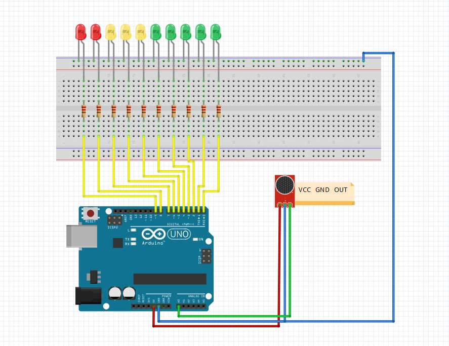

I am sure you know those volume meters we mostly find in professional recording studios. That’s what this project is about, a simple volume meter (or decibel meter) made with Arduino, a microphone and few LEDs.
The Arduino program for this project is very optimized and shortened so you can see what a properly written program looks like.
Let’s start with a list of components we need for the project:
- 1 x Arduino microphone
- 10 x LEDs (5 green, 3 yellow, 2 red) Color doesn’t matter so much, but it looks more awesome with different colors.
- 10 x 200-220Ω resistors
- Jumper wires
- 1 x Breadboard
Connect everything using the breadboard and make sure you are properly connecting the LEDs with resistors, it is very easy to make a mistake here. Use male-male cables to connect everything. The microphone module can also be plugged to the breadboard.
You can use a smaller breadboard as well, no need to use a huge one as I am doing.
You will find the program to upload to the Arduino board below, as I’ve already mentioned, I have tried to reduce the whole thing in 17 lines comments excluded. That is what we called efficient programming right here! 😉
The first loop is the LEDs setup and the second is to control the LEDs. You can adjust the sensitivity by changing the value in map function. You can change the value where you see 700: smaller for more sensitive or bigger for less sensitive.
The Code
void setup() {
//here is an input for sound sensor
pinMode(A0, INPUT);
//here we are setting up all pins as an outputs for LEDs
for(int z = 0; z < 10; z++){
pinMode(z, OUTPUT);
}
}
void loop() {
//here we are storing the volume value
int volume = analogRead(A0);
//max value for analog read is 1023 but it must be very very loud to reach this value
//so I lower it down in map function to 700
//mapping volume value to make it easier to turn LEDs on
volume = map(volume, 0, 700, 0, 10);
//for loop to turn on or off all LEDs
//thanks to this loop code for this project is very short
//we are going through all pins where we have LEDs and checking if the volume is
//bigger then pin number (that's why we are maping the volume)
for(int a = 0; a < 10; a++){ if(volume >= a){
//if it is bigger we can turn on the LED
digitalWrite(a, HIGH);
}else{
//if it is smaller we can turn the LED off
digitalWrite(a, LOW);
}
}
}
A good exercise will be to try adding more LEDs to the project. You can also try using the RGB LED strip instead of the LEDs we have just used.